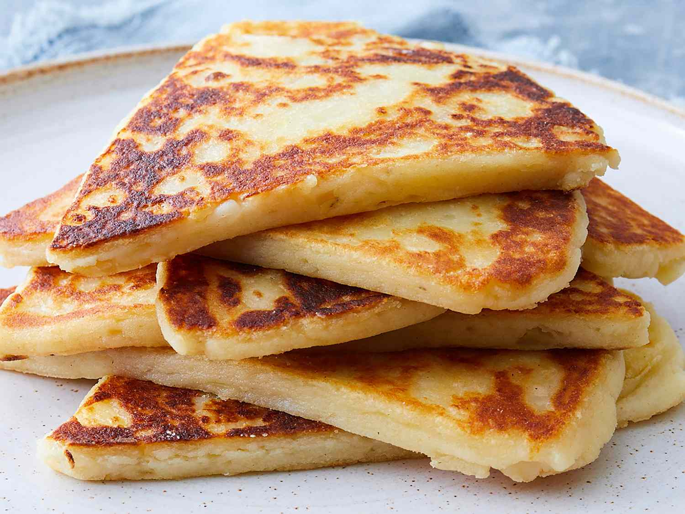

Wonderfull Potato Scones
Description
A tattie scone (tottie scone) or potato scone is a regional
variant of the savoury griddle scone which is especially popular
in Scotland. Fonte wikipedia
Ingredients
- 1 pound cooked potatoes
- 4 ounces self-rising flour
- 2 ounces butter
- 1/2 pinch salt
Steps
- Heat a lightly greased griddle or cast iron skillet over
medium-high heat.
- Mash potatoes with flour, butter, and salt in a large bowl
until a stiff dough forms
- Turn dough out onto a lightly floured work surface. Knead dough lightly
and roll dough out to a 1/2-inch-thick circle. Cut into 6 equial wedges.
- Working in batches, cook scones on the hot griddle until golden brown,
4 to 5 minutes per side.